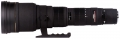

器材库 > 35mm画幅AF变焦镜头 > EX 300-800/5.6 APO IF HSM

详细规格
镜头类型
远摄变焦镜头
发布日期
2003-01-29
厂家推荐价格
790,000.00 （日元）
焦距
300mm-800mm
最大光圈
f/5.6
最小光圈
f/32
视角（对角）
8.20-3.10
镜头结构
18片/16组
光圈叶片
9片
最近对焦距离
600cm
最大放大倍率
0.145
驱动马达
HSM（超声波马达）
滤镜口径
46mm
镜头卡口
Canon EF, Minolta/Konica-Minolta/Sony AF, Nikon AF, Pentax AF
防抖
否
颜色
黑色
尺寸
166.00x255.00mm
重量
5730g
roywilson2015-08-24 20:104.75 分
操作性 5.00耐用性 4.50性价比 5.00解像力 5.00色彩还原 4.50机械结构 4.50
hlchangqing2013-08-08 19:504.42 分
操作性 4.00耐用性 4.50性价比 5.00解像力 4.50色彩还原 4.50机械结构 4.00
wanghc2008-05-31 21:074.42 分
操作性 4.50耐用性 4.50性价比 4.00解像力 4.50色彩还原 4.00机械结构 5.00
野卡2005-11-12 01:284.42 分
操作性 4.50耐用性 4.00性价比 5.00解像力 4.00色彩还原 4.50机械结构 4.50
太平修三2003-03-15 20:384.42 分
操作性 4.50耐用性 4.00性价比 5.00解像力 4.00色彩还原 4.50机械结构 4.50
产品图 / 样片
外观图
评测 / 相关文章
该产品暂无存档的评测文章